6 SS6 Results
| Pos | Car | Code | Time (s) | Gap | Diff |
|---|---|---|---|---|---|
| 1 | 11 | NEU | 518.2 | 0.0 | 0.0 |
| 2 | 33 | EVA | 518.6 | 0.4 | 0.4 |
| 3 | 6 | SOR | 519.2 | 1.0 | 0.6 |
| 4 | 1 | OGI | 519.5 | 1.3 | 0.3 |
| 5 | 16 | FOU | 521.0 | 2.8 | 1.5 |
| 6 | 69 | ROV | 521.6 | 3.4 | 0.6 |
| 7 | 44 | GRE | 523.3 | 5.1 | 1.7 |
| 8 | 2 | SOL | 527.4 | 9.2 | 4.1 |
| 9 | 14 | SLN | 531.0 | 12.8 | 3.6 |
| 10 | 8 | TÄN | 1118.2 | 600.0 | 356.1 |
6.1 Stage SS6 Splits Analysis
Reports on splits
6.1.1 Split Locations
Length of each split section in km:
| full_split_distances | stage_dist | |
|---|---|---|
| split_1 | 6.44 | 6.44 |
| split_2 | 5.77 | 12.21 |
| split_N | 2.00 | 14.21 |
6.1.2 Stage Split Times & Result
Summary of stage split times and overall stage result:
| code | split_1 | split_2 | split_N | diffFirstS | position |
|---|---|---|---|---|---|
| NEU | 218.1 | 465.9 | 518.2 | 0.0 | 1 |
| EVA | 218.2 | 466.6 | 518.6 | 0.4 | 2 |
| SOR | 218.7 | 467.1 | 519.2 | 1.0 | 3 |
| OGI | 219.3 | 467.7 | 519.5 | 1.3 | 4 |
| FOU | 218.6 | 468.5 | 521.0 | 2.8 | 5 |
| ROV | 220.8 | 469.3 | 521.6 | 3.4 | 6 |
| GRE | 220.4 | 470.6 | 523.3 | 5.1 | 7 |
| SOL | 222.8 | 474.4 | 527.4 | 9.2 | 8 |
| SLN | 224.4 | 477.9 | 531.0 | 12.8 | 9 |
6.1.3 Split Time Rankings
Rank of each split time:
| code | split_1 | split_2 | split_N |
|---|---|---|---|
| NEU | 1 | 1 | 1 |
| EVA | 2 | 2 | 2 |
| SOR | 4 | 3 | 3 |
| OGI | 5 | 4 | 4 |
| FOU | 3 | 5 | 5 |
| ROV | 7 | 6 | 6 |
| GRE | 6 | 7 | 7 |
| SOL | 8 | 8 | 8 |
| SLN | 9 | 9 | 9 |
Rank on each split section:
| code | split_1 | split_2 | split_N |
|---|---|---|---|
| NEU | 1 | 1 | 5 |
| EVA | 2 | 3 | 2 |
| SOR | 4 | 3 | 3 |
| OGI | 5 | 2 | 1 |
| FOU | 3 | 5 | 6 |
| ROV | 7 | 4 | 4 |
| GRE | 6 | 6 | 7 |
| SOL | 8 | 7 | 8 |
| SLN | 9 | 8 | 9 |
6.1.4 Split Section Pace
Pace is measured in seconds per kilometer, which is to say, how long it takes to complete each kilometer (lower is better):
| code | split_1 | split_2 | split_N |
|---|---|---|---|
| NEU | 33.87 | 42.95 | 26.15 |
| EVA | 33.88 | 43.05 | 26.00 |
| SOR | 33.96 | 43.05 | 26.05 |
| OGI | 34.05 | 43.05 | 25.90 |
| FOU | 33.94 | 43.31 | 26.25 |
| ROV | 34.29 | 43.07 | 26.15 |
| GRE | 34.22 | 43.36 | 26.35 |
| SOL | 34.60 | 43.60 | 26.50 |
| SLN | 34.84 | 43.93 | 26.55 |
6.1.5 Pace Chart
Pace relative to the stage winner.
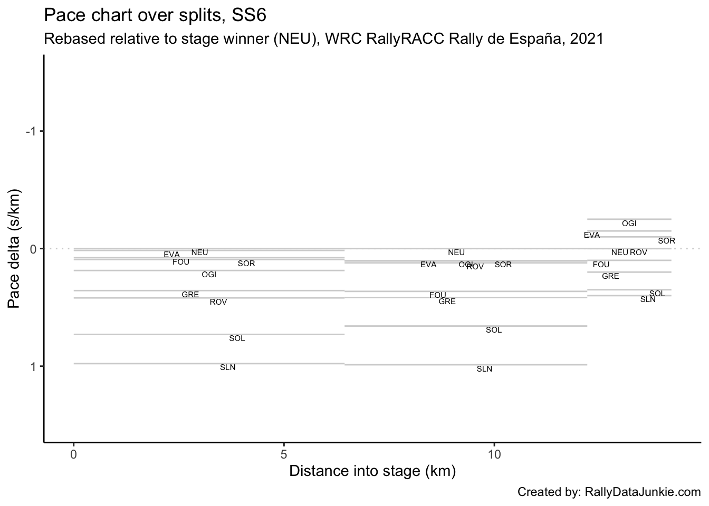
6.1.6 Ultimate Stage Comparisons
Split time comparisons relative to various ultimate stage time calculations.
These views provide various ways of comparing the performance of each driver to various ghost drivers:
- best recorded split time at each split (ultimate actuals): gives an estimate of how well the driver’s split times compare with each first ranked split time (time into stage at each split);
- fastest time going from one split to the next (ultimate sections): gives an estimate of how quickly each driver completed each split section relative to the quickest time recorded completing that split section (time taken to go from one split point to the next);
- accumulated ultimate sections times: gives and estimate of how quickly the driver is going relative to the fastest possible completion of the stage based on accumulated ultimate split section times.
6.1.6.1 Ultimate Actuals
Driver times compared to the first ranked recorded split time at each split:
| code | split_1 | split_2 | split_N |
|---|---|---|---|
| NEU | 0.0 | 0.0 | 0.0 |
| EVA | 0.1 | 0.7 | 0.4 |
| SOR | 0.6 | 1.2 | 1.0 |
| OGI | 1.2 | 1.8 | 1.3 |
| FOU | 0.5 | 2.6 | 2.8 |
| ROV | 2.7 | 3.4 | 3.4 |
| GRE | 2.3 | 4.7 | 5.1 |
| SOL | 4.7 | 8.5 | 9.2 |
| SLN | 6.3 | 12.0 | 12.8 |
| ultimate | 0.0 | 0.0 | 0.0 |
6.1.6.2 Ultimate Sections
Split durations rebased relative to the fastest transit of each split section:
| code | split_1 | split_2 | split_N |
|---|---|---|---|
| NEU | 0.0 | 0.0 | 0.5 |
| EVA | 0.1 | 0.6 | 0.2 |
| SOR | 0.6 | 0.6 | 0.3 |
| OGI | 1.2 | 0.6 | 0.0 |
| FOU | 0.5 | 2.1 | 0.7 |
| ROV | 2.7 | 0.7 | 0.5 |
| GRE | 2.3 | 2.4 | 0.9 |
| SOL | 4.7 | 3.8 | 1.2 |
| SLN | 6.3 | 5.7 | 1.3 |
| ultimate | 0.0 | 0.0 | 0.0 |
6.1.6.3 Ultimate Accumulated Sections
Actual split times relative to the accumulated ultimate split section times:
| code | split_1 | split_2 | split_N |
|---|---|---|---|
| NEU | 0.0 | 0.0 | 0.5 |
| EVA | 0.1 | 0.7 | 0.9 |
| SOR | 0.6 | 1.2 | 1.5 |
| OGI | 1.2 | 1.8 | 1.8 |
| FOU | 0.5 | 2.6 | 3.3 |
| ROV | 2.7 | 3.4 | 3.9 |
| GRE | 2.3 | 4.7 | 5.6 |
| SOL | 4.7 | 8.5 | 9.7 |
| SLN | 6.3 | 12.0 | 13.3 |
| ultimate | 0.0 | 0.0 | 0.0 |
6.1.7 Split Section Pace Distribution
Distribution of pace values for each split section:
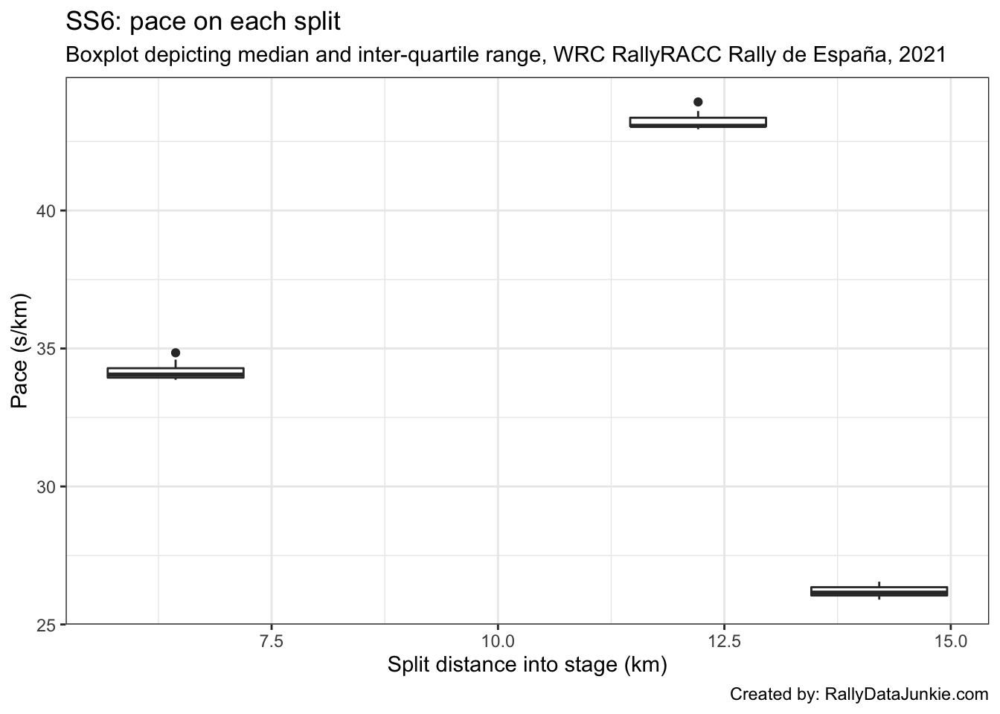
6.2 Text report
| code | identifier | entryId | stage | overall_pos | prev_position | retained_lead | lost_lead | gained_lead | overall_position_delta | overall_chase_code | overall_lead_code | overall_gap | overall_diff | overall_chase | overall_stage_pos | stage_position | stage_win | position | TimeInS | gap | diff | chase | chase_code | lead_code |
|---|---|---|---|---|---|---|---|---|---|---|---|---|---|---|---|---|---|---|---|---|---|---|---|---|
| NEU | 11 | 24007 | SS6 | 1 | 1 | TRUE | FALSE | FALSE | 0 | EVA | NA | 0.0 | NA | 0.7 | 1 | 1 | TRUE | 1 | 518.2 | 0.0 | 0.0 | 0.4 | EVA | NA |
| EVA | 33 | 24006 | SS6 | 2 | 2 | FALSE | FALSE | FALSE | 0 | OGI | NEU | 0.7 | 0.7 | 18.7 | 2 | 2 | FALSE | 2 | 518.6 | 0.4 | 0.4 | 0.6 | SOR | NEU |
| SOR | 6 | 24012 | SS6 | 4 | 4 | FALSE | FALSE | FALSE | 0 | ROV | OGI | 24.8 | 5.4 | 13.2 | 3 | 3 | FALSE | 3 | 519.2 | 1.0 | 0.6 | 0.3 | OGI | EVA |
| OGI | 1 | 24005 | SS6 | 3 | 3 | FALSE | FALSE | FALSE | 0 | SOR | EVA | 19.4 | 18.7 | 5.4 | 4 | 4 | FALSE | 4 | 519.5 | 1.3 | 0.3 | 1.5 | FOU | SOR |
| FOU | 16 | 24013 | SS6 | 6 | 6 | FALSE | FALSE | FALSE | 0 | GRE | ROV | 70.2 | 32.2 | 18.7 | 5 | 5 | FALSE | 5 | 521.0 | 2.8 | 1.5 | 0.6 | ROV | OGI |
| ROV | 69 | 24008 | SS6 | 5 | 5 | FALSE | FALSE | FALSE | 0 | FOU | SOR | 38.0 | 13.2 | 32.2 | 6 | 6 | FALSE | 6 | 521.6 | 3.4 | 0.6 | 1.7 | GRE | FOU |
| GRE | 44 | 24011 | SS6 | 7 | 7 | FALSE | FALSE | FALSE | 0 | SOL | FOU | 88.9 | 18.7 | 26.7 | 7 | 7 | FALSE | 7 | 523.3 | 5.1 | 1.7 | 4.1 | SOL | ROV |
| SOL | 2 | 24015 | SS6 | 8 | 8 | FALSE | FALSE | FALSE | 0 | SLN | GRE | 115.6 | 26.7 | 34.9 | 8 | 8 | FALSE | 8 | 527.4 | 9.2 | 4.1 | 3.6 | SLN | GRE |
| SLN | 14 | 24014 | SS6 | 9 | 9 | FALSE | FALSE | FALSE | 0 | KAT | SOL | 150.5 | 34.9 | NA | 9 | 9 | FALSE | 9 | 531.0 | 12.8 | 3.6 | NA | NA | SOL |
Stage report for SS6:
NEU took the stage and kept hold of the overall lead of the rally in a time of 518.2s.
EVA took second position on stage, 0.4s behind NEU and just 0.4s further back behind NEU.
SOR took third position on stage, 1.0s behind the stage winner in a time of 519.2s, just 0.6s off EVA.
OGI was in fourth position on stage, with a time of 519.5s, just 0.3s off SOR.
FOU took fifth position on stage, with a time of 521.0s .
ROV took sixth on stage, with a time of 521.6s, just 0.6s off FOU.
GRE took seventh place on stage, with a time of 523.3s .
SOL was in eighth position on stage, with a time of 527.4s .
SLN was in ninth position on stage, 12.8s behind the stage winner .
6.3 Driver Report, SS6 - OGI
OGI was in fourth position on stage, with a time of 519.5s, just 0.3s off SOR.
Stage report for OGI.
| Pos | Car | Code | Time (s) | Gap | Diff |
|---|---|---|---|---|---|
| 1 | 11 | NEU | -1.3 | -1.3 | 0.0 |
| 2 | 33 | EVA | -0.9 | -0.9 | 0.4 |
| 3 | 6 | SOR | -0.3 | -0.3 | 0.6 |
| 4 | 1 | OGI | 0.0 | 0.0 | 0.3 |
| 5 | 16 | FOU | 1.5 | 1.5 | 1.5 |
| 6 | 69 | ROV | 2.1 | 2.1 | 0.6 |
| 7 | 44 | GRE | 3.8 | 3.8 | 1.7 |
| 8 | 2 | SOL | 7.9 | 7.9 | 4.1 |
| 9 | 14 | SLN | 11.5 | 11.5 | 3.6 |
| 61 | 8 | TÄN | 598.7 | 598.7 | 356.1 |
| 62 | 18 | KAT | 598.7 | 598.7 | 0.0 |
| 63 | 54 | PER | 662.6 | 662.6 | 63.9 |
6.3.1 Rebased Split Times
OGI’s delta at each split compared to other drivers.
| code | split_1 | split_2 | split_N |
|---|---|---|---|
| NEU | -1.2 | -1.8 | -1.3 |
| EVA | -1.1 | -1.1 | -0.9 |
| SOR | -0.6 | -0.6 | -0.3 |
| OGI | 0.0 | 0.0 | 0.0 |
| FOU | -0.7 | 0.8 | 1.5 |
| ROV | 1.5 | 1.6 | 2.1 |
| GRE | 1.1 | 2.9 | 3.8 |
| SOL | 3.5 | 6.7 | 7.9 |
| SLN | 5.1 | 10.2 | 11.5 |
6.3.2 Off-the-Pace Chart
Accumulated stage time deltas at each split:
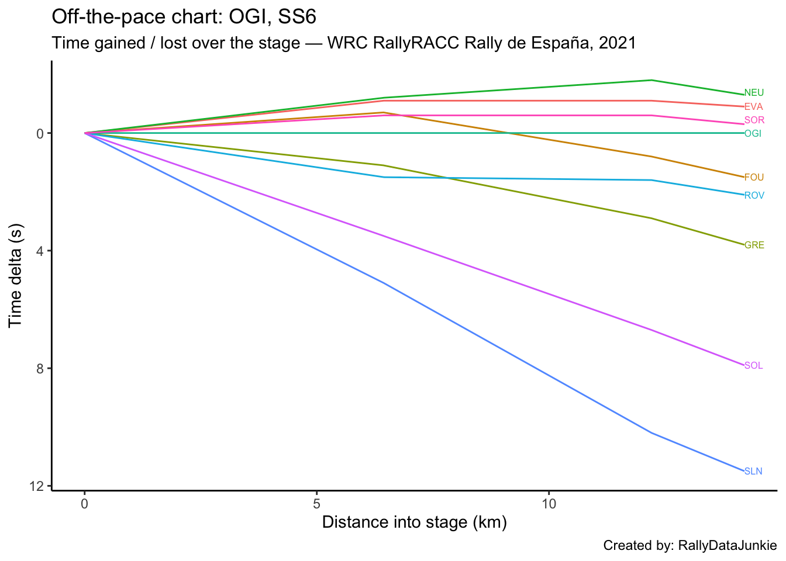
6.3.3 Within-Split Duration Deltas
OGI’s delta in time to complete each split section compared to other drivers:
| code | split_1 | split_2 | split_N |
|---|---|---|---|
| NEU | -1.2 | -0.6 | 0.5 |
| EVA | -1.1 | 0.0 | 0.2 |
| SOR | -0.6 | 0.0 | 0.3 |
| OGI | 0.0 | 0.0 | 0.0 |
| FOU | -0.7 | 1.5 | 0.7 |
| ROV | 1.5 | 0.1 | 0.5 |
| GRE | 1.1 | 1.8 | 0.9 |
| SOL | 3.5 | 3.2 | 1.2 |
| SLN | 5.1 | 5.1 | 1.3 |
6.3.4 Within-Split Pace Deltas
| code | split_1 | split_2 | split_N |
|---|---|---|---|
| NEU | -0.19 | -0.10 | 0.25 |
| EVA | -0.17 | 0.00 | 0.10 |
| SOR | -0.09 | 0.00 | 0.15 |
| OGI | 0.00 | 0.00 | 0.00 |
| FOU | -0.11 | 0.26 | 0.35 |
| ROV | 0.23 | 0.02 | 0.25 |
| GRE | 0.17 | 0.31 | 0.45 |
| SOL | 0.54 | 0.55 | 0.60 |
| SLN | 0.79 | 0.88 | 0.65 |
6.3.5 Within-Split Pace Map
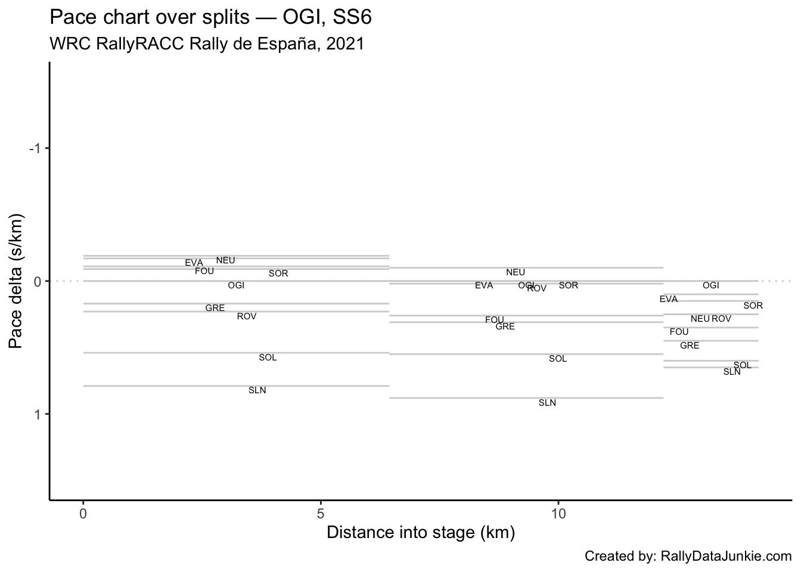
6.4 Driver Report, SS6 - EVA
EVA took second position on stage, 0.4s behind NEU and just 0.4s further back behind NEU.
Stage report for EVA.
| Pos | Car | Code | Time (s) | Gap | Diff |
|---|---|---|---|---|---|
| 1 | 11 | NEU | -0.4 | -0.4 | 0.0 |
| 2 | 33 | EVA | 0.0 | 0.0 | 0.4 |
| 3 | 6 | SOR | 0.6 | 0.6 | 0.6 |
| 4 | 1 | OGI | 0.9 | 0.9 | 0.3 |
| 5 | 16 | FOU | 2.4 | 2.4 | 1.5 |
| 6 | 69 | ROV | 3.0 | 3.0 | 0.6 |
| 7 | 44 | GRE | 4.7 | 4.7 | 1.7 |
| 8 | 2 | SOL | 8.8 | 8.8 | 4.1 |
| 9 | 14 | SLN | 12.4 | 12.4 | 3.6 |
| 61 | 8 | TÄN | 599.6 | 599.6 | 356.1 |
| 62 | 18 | KAT | 599.6 | 599.6 | 0.0 |
| 63 | 54 | PER | 663.5 | 663.5 | 63.9 |
6.4.1 Rebased Split Times
EVA’s delta at each split compared to other drivers.
| code | split_1 | split_2 | split_N |
|---|---|---|---|
| NEU | -0.1 | -0.7 | -0.4 |
| EVA | 0.0 | 0.0 | 0.0 |
| SOR | 0.5 | 0.5 | 0.6 |
| OGI | 1.1 | 1.1 | 0.9 |
| FOU | 0.4 | 1.9 | 2.4 |
| ROV | 2.6 | 2.7 | 3.0 |
| GRE | 2.2 | 4.0 | 4.7 |
| SOL | 4.6 | 7.8 | 8.8 |
| SLN | 6.2 | 11.3 | 12.4 |
6.4.2 Off-the-Pace Chart
Accumulated stage time deltas at each split:
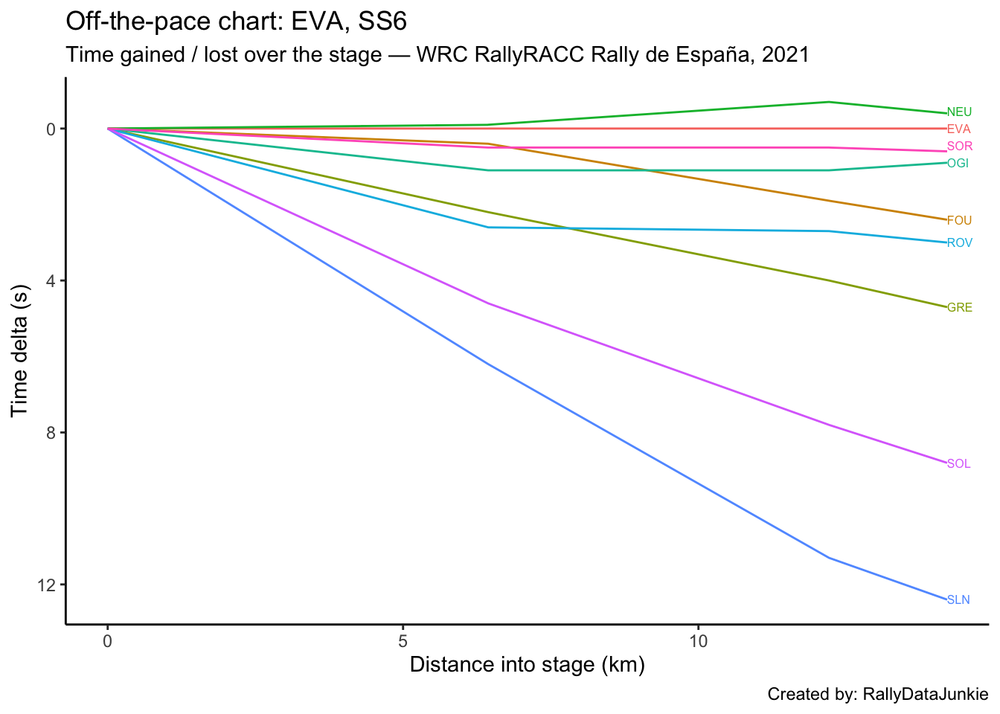
6.4.3 Within-Split Duration Deltas
EVA’s delta in time to complete each split section compared to other drivers:
| code | split_1 | split_2 | split_N |
|---|---|---|---|
| NEU | -0.1 | -0.6 | 0.3 |
| EVA | 0.0 | 0.0 | 0.0 |
| SOR | 0.5 | 0.0 | 0.1 |
| OGI | 1.1 | 0.0 | -0.2 |
| FOU | 0.4 | 1.5 | 0.5 |
| ROV | 2.6 | 0.1 | 0.3 |
| GRE | 2.2 | 1.8 | 0.7 |
| SOL | 4.6 | 3.2 | 1.0 |
| SLN | 6.2 | 5.1 | 1.1 |
6.4.4 Within-Split Pace Deltas
| code | split_1 | split_2 | split_N |
|---|---|---|---|
| NEU | -0.02 | -0.10 | 0.15 |
| EVA | 0.00 | 0.00 | 0.00 |
| SOR | 0.08 | 0.00 | 0.05 |
| OGI | 0.17 | 0.00 | -0.10 |
| FOU | 0.06 | 0.26 | 0.25 |
| ROV | 0.40 | 0.02 | 0.15 |
| GRE | 0.34 | 0.31 | 0.35 |
| SOL | 0.71 | 0.55 | 0.50 |
| SLN | 0.96 | 0.88 | 0.55 |
6.4.5 Within-Split Pace Map
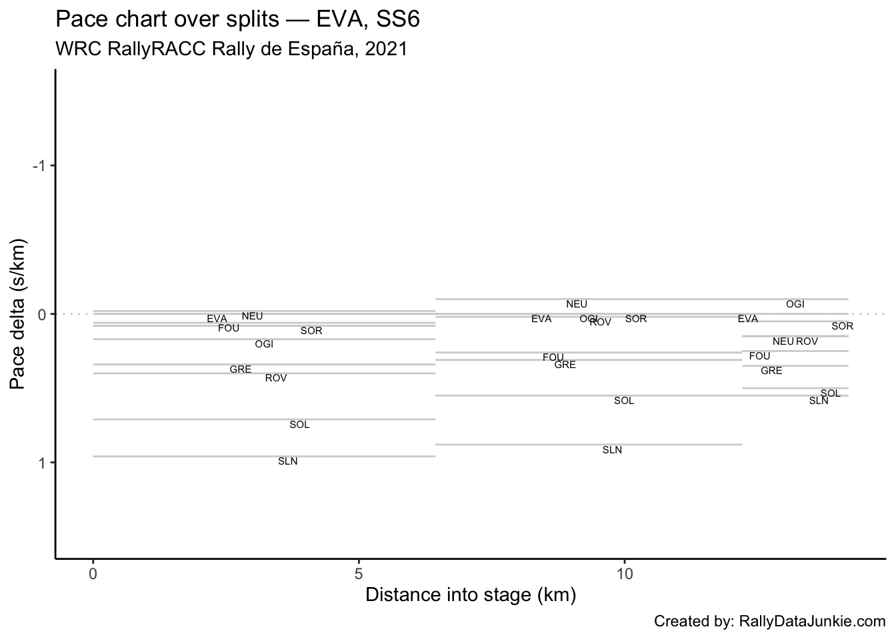
6.5 Driver Report, SS6 - NEU
NEU took the stage and kept hold of the overall lead of the rally in a time of 518.2s.
Stage report for NEU.
| Pos | Car | Code | Time (s) | Gap | Diff |
|---|---|---|---|---|---|
| 1 | 11 | NEU | 0.0 | 0.0 | 0.0 |
| 2 | 33 | EVA | 0.4 | 0.4 | 0.4 |
| 3 | 6 | SOR | 1.0 | 1.0 | 0.6 |
| 4 | 1 | OGI | 1.3 | 1.3 | 0.3 |
| 5 | 16 | FOU | 2.8 | 2.8 | 1.5 |
| 6 | 69 | ROV | 3.4 | 3.4 | 0.6 |
| 7 | 44 | GRE | 5.1 | 5.1 | 1.7 |
| 8 | 2 | SOL | 9.2 | 9.2 | 4.1 |
| 9 | 14 | SLN | 12.8 | 12.8 | 3.6 |
| 61 | 8 | TÄN | 600.0 | 600.0 | 356.1 |
| 62 | 18 | KAT | 600.0 | 600.0 | 0.0 |
| 63 | 54 | PER | 663.9 | 663.9 | 63.9 |
6.5.1 Rebased Split Times
NEU’s delta at each split compared to other drivers.
| code | split_1 | split_2 | split_N |
|---|---|---|---|
| NEU | 0.0 | 0.0 | 0.0 |
| EVA | 0.1 | 0.7 | 0.4 |
| SOR | 0.6 | 1.2 | 1.0 |
| OGI | 1.2 | 1.8 | 1.3 |
| FOU | 0.5 | 2.6 | 2.8 |
| ROV | 2.7 | 3.4 | 3.4 |
| GRE | 2.3 | 4.7 | 5.1 |
| SOL | 4.7 | 8.5 | 9.2 |
| SLN | 6.3 | 12.0 | 12.8 |
6.5.2 Off-the-Pace Chart
Accumulated stage time deltas at each split:
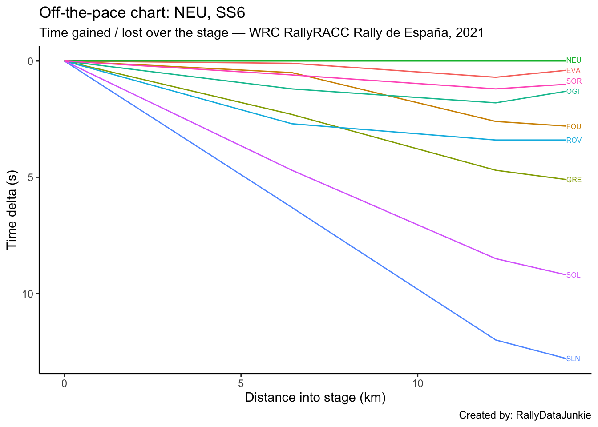
6.5.3 Within-Split Duration Deltas
NEU’s delta in time to complete each split section compared to other drivers:
| code | split_1 | split_2 | split_N |
|---|---|---|---|
| NEU | 0.0 | 0.0 | 0.0 |
| EVA | 0.1 | 0.6 | -0.3 |
| SOR | 0.6 | 0.6 | -0.2 |
| OGI | 1.2 | 0.6 | -0.5 |
| FOU | 0.5 | 2.1 | 0.2 |
| ROV | 2.7 | 0.7 | 0.0 |
| GRE | 2.3 | 2.4 | 0.4 |
| SOL | 4.7 | 3.8 | 0.7 |
| SLN | 6.3 | 5.7 | 0.8 |
6.5.4 Within-Split Pace Deltas
| code | split_1 | split_2 | split_N |
|---|---|---|---|
| NEU | 0.00 | 0.00 | 0.00 |
| EVA | 0.02 | 0.10 | -0.15 |
| SOR | 0.09 | 0.10 | -0.10 |
| OGI | 0.19 | 0.10 | -0.25 |
| FOU | 0.08 | 0.36 | 0.10 |
| ROV | 0.42 | 0.12 | 0.00 |
| GRE | 0.36 | 0.42 | 0.20 |
| SOL | 0.73 | 0.66 | 0.35 |
| SLN | 0.98 | 0.99 | 0.40 |
6.5.5 Within-Split Pace Map
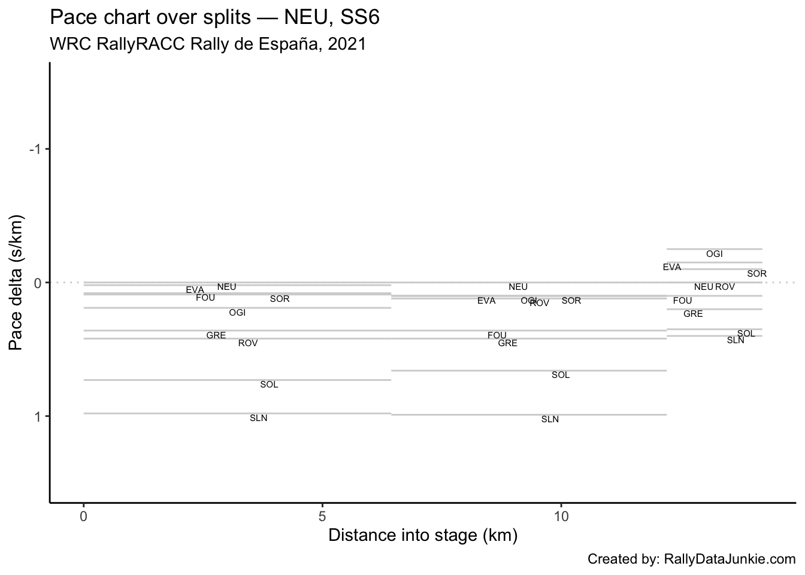
6.6 Driver Report, SS6 - ROV
ROV took sixth on stage, with a time of 521.6s, just 0.6s off FOU.
Stage report for ROV.
| Pos | Car | Code | Time (s) | Gap | Diff |
|---|---|---|---|---|---|
| 1 | 11 | NEU | -3.4 | -3.4 | 0.0 |
| 2 | 33 | EVA | -3.0 | -3.0 | 0.4 |
| 3 | 6 | SOR | -2.4 | -2.4 | 0.6 |
| 4 | 1 | OGI | -2.1 | -2.1 | 0.3 |
| 5 | 16 | FOU | -0.6 | -0.6 | 1.5 |
| 6 | 69 | ROV | 0.0 | 0.0 | 0.6 |
| 7 | 44 | GRE | 1.7 | 1.7 | 1.7 |
| 8 | 2 | SOL | 5.8 | 5.8 | 4.1 |
| 9 | 14 | SLN | 9.4 | 9.4 | 3.6 |
| 61 | 8 | TÄN | 596.6 | 596.6 | 356.1 |
| 62 | 18 | KAT | 596.6 | 596.6 | 0.0 |
| 63 | 54 | PER | 660.5 | 660.5 | 63.9 |
6.6.1 Rebased Split Times
ROV’s delta at each split compared to other drivers.
| code | split_1 | split_2 | split_N |
|---|---|---|---|
| NEU | -2.7 | -3.4 | -3.4 |
| EVA | -2.6 | -2.7 | -3.0 |
| SOR | -2.1 | -2.2 | -2.4 |
| OGI | -1.5 | -1.6 | -2.1 |
| FOU | -2.2 | -0.8 | -0.6 |
| ROV | 0.0 | 0.0 | 0.0 |
| GRE | -0.4 | 1.3 | 1.7 |
| SOL | 2.0 | 5.1 | 5.8 |
| SLN | 3.6 | 8.6 | 9.4 |
6.6.2 Off-the-Pace Chart
Accumulated stage time deltas at each split:
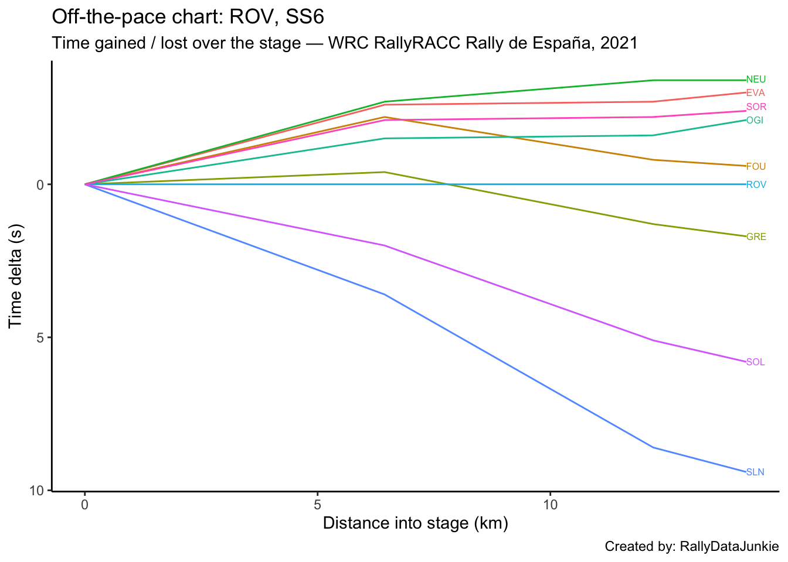
6.6.3 Within-Split Duration Deltas
ROV’s delta in time to complete each split section compared to other drivers:
| code | split_1 | split_2 | split_N |
|---|---|---|---|
| NEU | -2.7 | -0.7 | 0.0 |
| EVA | -2.6 | -0.1 | -0.3 |
| SOR | -2.1 | -0.1 | -0.2 |
| OGI | -1.5 | -0.1 | -0.5 |
| FOU | -2.2 | 1.4 | 0.2 |
| ROV | 0.0 | 0.0 | 0.0 |
| GRE | -0.4 | 1.7 | 0.4 |
| SOL | 2.0 | 3.1 | 0.7 |
| SLN | 3.6 | 5.0 | 0.8 |
6.6.4 Within-Split Pace Deltas
| code | split_1 | split_2 | split_N |
|---|---|---|---|
| NEU | -0.42 | -0.12 | 0.00 |
| EVA | -0.40 | -0.02 | -0.15 |
| SOR | -0.33 | -0.02 | -0.10 |
| OGI | -0.23 | -0.02 | -0.25 |
| FOU | -0.34 | 0.24 | 0.10 |
| ROV | 0.00 | 0.00 | 0.00 |
| GRE | -0.06 | 0.29 | 0.20 |
| SOL | 0.31 | 0.54 | 0.35 |
| SLN | 0.56 | 0.87 | 0.40 |
6.6.5 Within-Split Pace Map
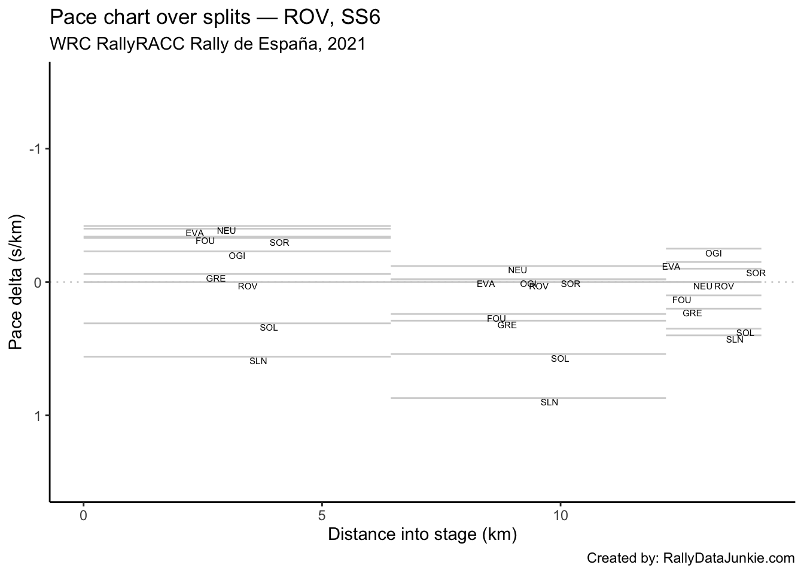
6.7 Driver Report, SS6 - TÄN
Stage report for TÄN.
| Pos | Car | Code | Time (s) | Gap | Diff |
|---|---|---|---|---|---|
| 1 | 11 | NEU | -600.0 | -600.0 | 0.0 |
| 2 | 33 | EVA | -599.6 | -599.6 | 0.4 |
| 3 | 6 | SOR | -599.0 | -599.0 | 0.6 |
| 4 | 1 | OGI | -598.7 | -598.7 | 0.3 |
| 5 | 16 | FOU | -597.2 | -597.2 | 1.5 |
| 6 | 69 | ROV | -596.6 | -596.6 | 0.6 |
| 7 | 44 | GRE | -594.9 | -594.9 | 1.7 |
| 8 | 2 | SOL | -590.8 | -590.8 | 4.1 |
| 9 | 14 | SLN | -587.2 | -587.2 | 3.6 |
| 61 | 8 | TÄN | 0.0 | 0.0 | 356.1 |
| 62 | 18 | KAT | 0.0 | 0.0 | 0.0 |
| 63 | 54 | PER | 63.9 | 63.9 | 63.9 |
6.7.1 Rebased Split Times
TÄN’s delta at each split compared to other drivers.
| code | split_1 | split_2 | split_N |
|---|---|---|---|
6.7.2 Off-the-Pace Chart
Accumulated stage time deltas at each split:
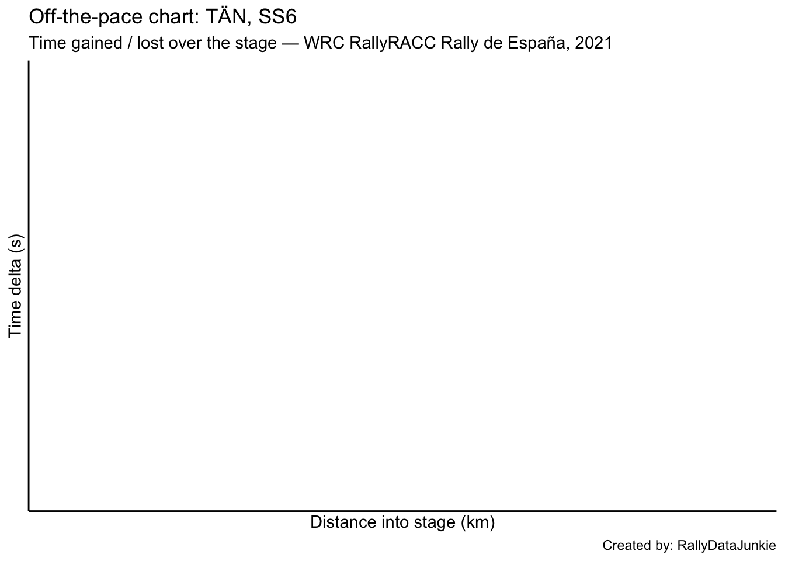
6.7.3 Within-Split Duration Deltas
TÄN’s delta in time to complete each split section compared to other drivers:
| code | split_1 | split_2 | split_N |
|---|---|---|---|
6.7.4 Within-Split Pace Deltas
| code | split_1 | split_2 | split_N |
|---|---|---|---|
6.7.5 Within-Split Pace Map
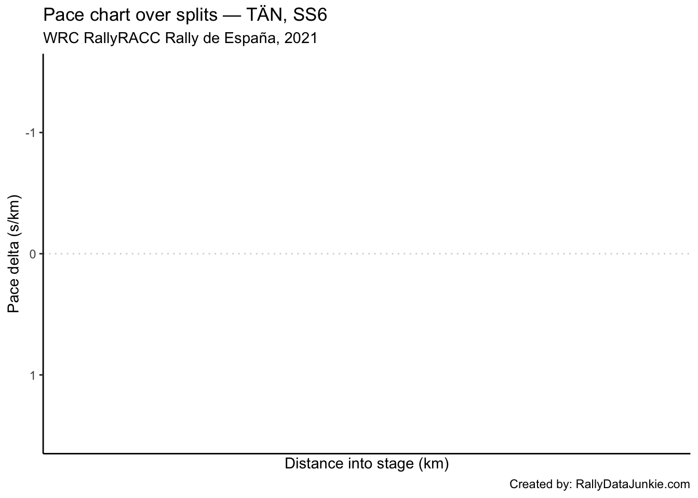
6.8 Driver Report, SS6 - KAT
Stage report for KAT.
| Pos | Car | Code | Time (s) | Gap | Diff |
|---|---|---|---|---|---|
| 1 | 11 | NEU | -600.0 | -600.0 | 0.0 |
| 2 | 33 | EVA | -599.6 | -599.6 | 0.4 |
| 3 | 6 | SOR | -599.0 | -599.0 | 0.6 |
| 4 | 1 | OGI | -598.7 | -598.7 | 0.3 |
| 5 | 16 | FOU | -597.2 | -597.2 | 1.5 |
| 6 | 69 | ROV | -596.6 | -596.6 | 0.6 |
| 7 | 44 | GRE | -594.9 | -594.9 | 1.7 |
| 8 | 2 | SOL | -590.8 | -590.8 | 4.1 |
| 9 | 14 | SLN | -587.2 | -587.2 | 3.6 |
| 61 | 8 | TÄN | 0.0 | 0.0 | 356.1 |
| 62 | 18 | KAT | 0.0 | 0.0 | 0.0 |
| 63 | 54 | PER | 63.9 | 63.9 | 63.9 |
6.8.1 Rebased Split Times
KAT’s delta at each split compared to other drivers.
| code | split_1 | split_2 | split_N |
|---|---|---|---|
6.8.2 Off-the-Pace Chart
Accumulated stage time deltas at each split:
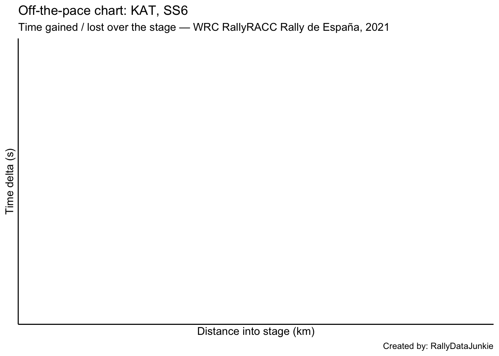
6.8.3 Within-Split Duration Deltas
KAT’s delta in time to complete each split section compared to other drivers:
| code | split_1 | split_2 | split_N |
|---|---|---|---|
6.8.4 Within-Split Pace Deltas
| code | split_1 | split_2 | split_N |
|---|---|---|---|
6.8.5 Within-Split Pace Map
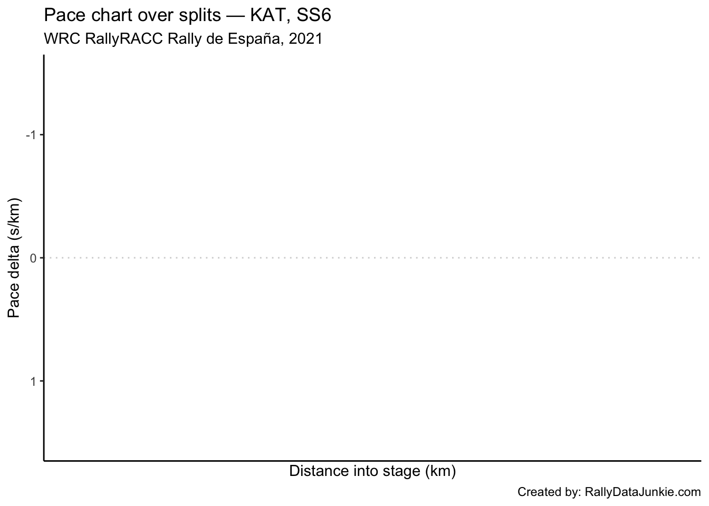
6.9 Driver Report, SS6 - GRE
GRE took seventh place on stage, with a time of 523.3s .
Stage report for GRE.
| Pos | Car | Code | Time (s) | Gap | Diff |
|---|---|---|---|---|---|
| 1 | 11 | NEU | -5.1 | -5.1 | 0.0 |
| 2 | 33 | EVA | -4.7 | -4.7 | 0.4 |
| 3 | 6 | SOR | -4.1 | -4.1 | 0.6 |
| 4 | 1 | OGI | -3.8 | -3.8 | 0.3 |
| 5 | 16 | FOU | -2.3 | -2.3 | 1.5 |
| 6 | 69 | ROV | -1.7 | -1.7 | 0.6 |
| 7 | 44 | GRE | 0.0 | 0.0 | 1.7 |
| 8 | 2 | SOL | 4.1 | 4.1 | 4.1 |
| 9 | 14 | SLN | 7.7 | 7.7 | 3.6 |
| 61 | 8 | TÄN | 594.9 | 594.9 | 356.1 |
| 62 | 18 | KAT | 594.9 | 594.9 | 0.0 |
| 63 | 54 | PER | 658.8 | 658.8 | 63.9 |
6.9.1 Rebased Split Times
GRE’s delta at each split compared to other drivers.
| code | split_1 | split_2 | split_N |
|---|---|---|---|
| NEU | -2.3 | -4.7 | -5.1 |
| EVA | -2.2 | -4.0 | -4.7 |
| SOR | -1.7 | -3.5 | -4.1 |
| OGI | -1.1 | -2.9 | -3.8 |
| FOU | -1.8 | -2.1 | -2.3 |
| ROV | 0.4 | -1.3 | -1.7 |
| GRE | 0.0 | 0.0 | 0.0 |
| SOL | 2.4 | 3.8 | 4.1 |
| SLN | 4.0 | 7.3 | 7.7 |
6.9.2 Off-the-Pace Chart
Accumulated stage time deltas at each split:
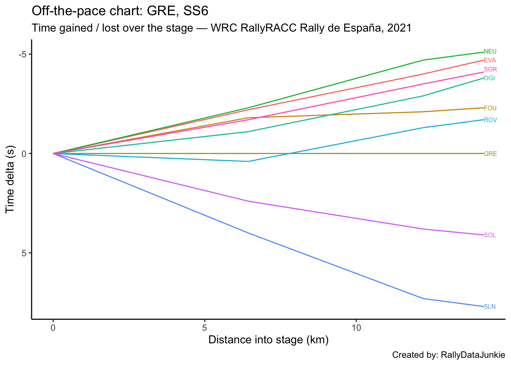
6.9.3 Within-Split Duration Deltas
GRE’s delta in time to complete each split section compared to other drivers:
| code | split_1 | split_2 | split_N |
|---|---|---|---|
| NEU | -2.3 | -2.4 | -0.4 |
| EVA | -2.2 | -1.8 | -0.7 |
| SOR | -1.7 | -1.8 | -0.6 |
| OGI | -1.1 | -1.8 | -0.9 |
| FOU | -1.8 | -0.3 | -0.2 |
| ROV | 0.4 | -1.7 | -0.4 |
| GRE | 0.0 | 0.0 | 0.0 |
| SOL | 2.4 | 1.4 | 0.3 |
| SLN | 4.0 | 3.3 | 0.4 |
6.9.4 Within-Split Pace Deltas
| code | split_1 | split_2 | split_N |
|---|---|---|---|
| NEU | -0.36 | -0.42 | -0.20 |
| EVA | -0.34 | -0.31 | -0.35 |
| SOR | -0.26 | -0.31 | -0.30 |
| OGI | -0.17 | -0.31 | -0.45 |
| FOU | -0.28 | -0.05 | -0.10 |
| ROV | 0.06 | -0.29 | -0.20 |
| GRE | 0.00 | 0.00 | 0.00 |
| SOL | 0.37 | 0.24 | 0.15 |
| SLN | 0.62 | 0.57 | 0.20 |
6.9.5 Within-Split Pace Map
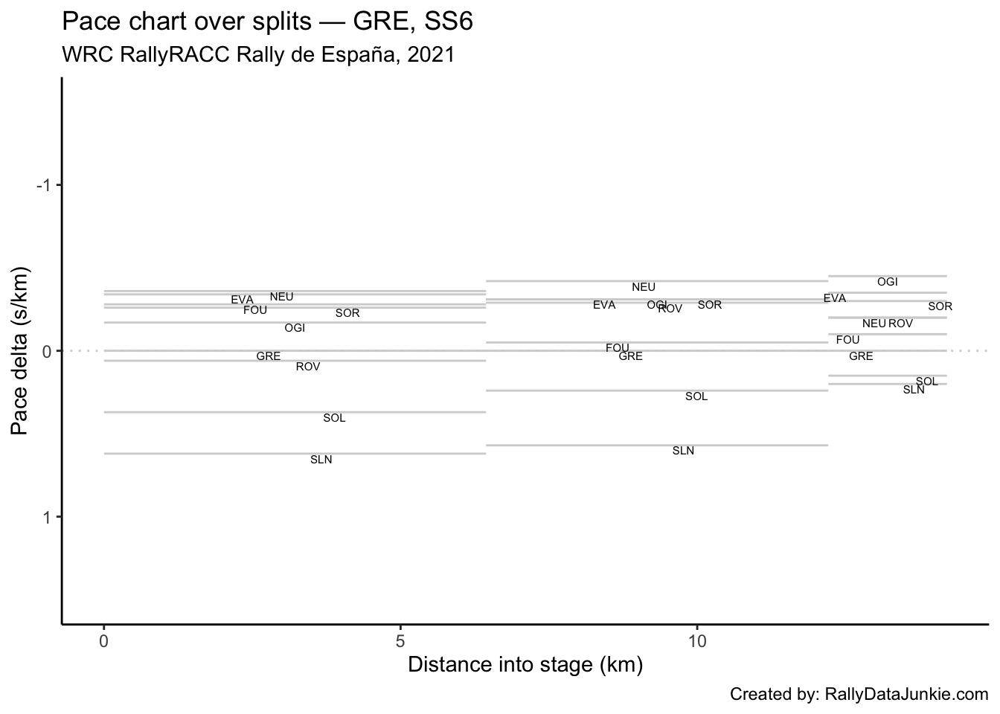
6.10 Driver Report, SS6 - SOR
SOR took third position on stage, 1.0s behind the stage winner in a time of 519.2s, just 0.6s off EVA.
Stage report for SOR.
| Pos | Car | Code | Time (s) | Gap | Diff |
|---|---|---|---|---|---|
| 1 | 11 | NEU | -1.0 | -1.0 | 0.0 |
| 2 | 33 | EVA | -0.6 | -0.6 | 0.4 |
| 3 | 6 | SOR | 0.0 | 0.0 | 0.6 |
| 4 | 1 | OGI | 0.3 | 0.3 | 0.3 |
| 5 | 16 | FOU | 1.8 | 1.8 | 1.5 |
| 6 | 69 | ROV | 2.4 | 2.4 | 0.6 |
| 7 | 44 | GRE | 4.1 | 4.1 | 1.7 |
| 8 | 2 | SOL | 8.2 | 8.2 | 4.1 |
| 9 | 14 | SLN | 11.8 | 11.8 | 3.6 |
| 61 | 8 | TÄN | 599.0 | 599.0 | 356.1 |
| 62 | 18 | KAT | 599.0 | 599.0 | 0.0 |
| 63 | 54 | PER | 662.9 | 662.9 | 63.9 |
6.10.1 Rebased Split Times
SOR’s delta at each split compared to other drivers.
| code | split_1 | split_2 | split_N |
|---|---|---|---|
| NEU | -0.6 | -1.2 | -1.0 |
| EVA | -0.5 | -0.5 | -0.6 |
| SOR | 0.0 | 0.0 | 0.0 |
| OGI | 0.6 | 0.6 | 0.3 |
| FOU | -0.1 | 1.4 | 1.8 |
| ROV | 2.1 | 2.2 | 2.4 |
| GRE | 1.7 | 3.5 | 4.1 |
| SOL | 4.1 | 7.3 | 8.2 |
| SLN | 5.7 | 10.8 | 11.8 |
6.10.2 Off-the-Pace Chart
Accumulated stage time deltas at each split:
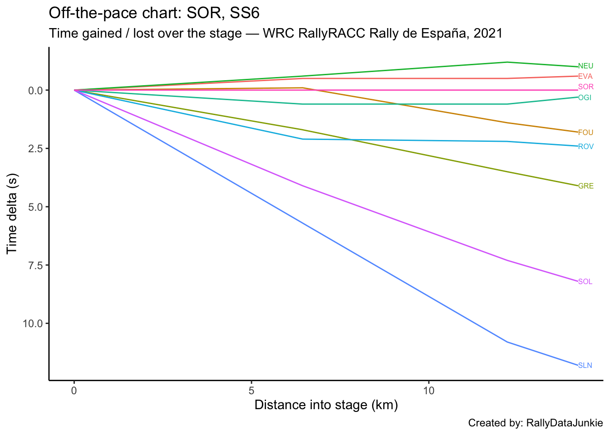
6.10.3 Within-Split Duration Deltas
SOR’s delta in time to complete each split section compared to other drivers:
| code | split_1 | split_2 | split_N |
|---|---|---|---|
| NEU | -0.6 | -0.6 | 0.2 |
| EVA | -0.5 | 0.0 | -0.1 |
| SOR | 0.0 | 0.0 | 0.0 |
| OGI | 0.6 | 0.0 | -0.3 |
| FOU | -0.1 | 1.5 | 0.4 |
| ROV | 2.1 | 0.1 | 0.2 |
| GRE | 1.7 | 1.8 | 0.6 |
| SOL | 4.1 | 3.2 | 0.9 |
| SLN | 5.7 | 5.1 | 1.0 |
6.10.4 Within-Split Pace Deltas
| code | split_1 | split_2 | split_N |
|---|---|---|---|
| NEU | -0.09 | -0.10 | 0.10 |
| EVA | -0.08 | 0.00 | -0.05 |
| SOR | 0.00 | 0.00 | 0.00 |
| OGI | 0.09 | 0.00 | -0.15 |
| FOU | -0.02 | 0.26 | 0.20 |
| ROV | 0.33 | 0.02 | 0.10 |
| GRE | 0.26 | 0.31 | 0.30 |
| SOL | 0.64 | 0.55 | 0.45 |
| SLN | 0.89 | 0.88 | 0.50 |
6.10.5 Within-Split Pace Map
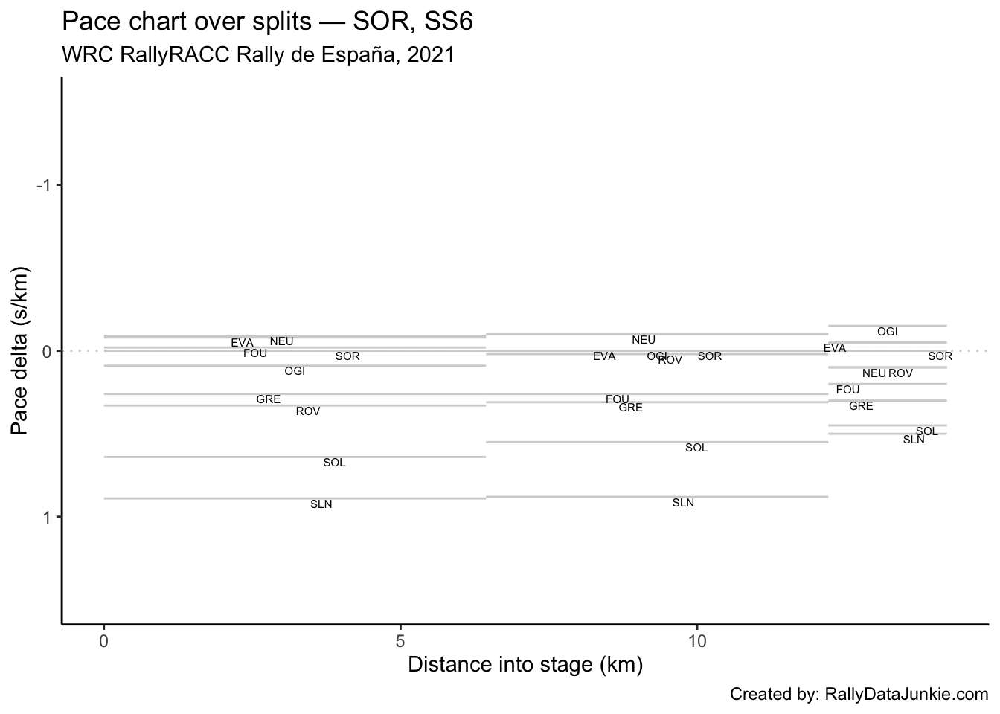
6.11 Driver Report, SS6 - FOU
FOU took fifth position on stage, with a time of 521.0s .
Stage report for FOU.
| Pos | Car | Code | Time (s) | Gap | Diff |
|---|---|---|---|---|---|
| 1 | 11 | NEU | -2.8 | -2.8 | 0.0 |
| 2 | 33 | EVA | -2.4 | -2.4 | 0.4 |
| 3 | 6 | SOR | -1.8 | -1.8 | 0.6 |
| 4 | 1 | OGI | -1.5 | -1.5 | 0.3 |
| 5 | 16 | FOU | 0.0 | 0.0 | 1.5 |
| 6 | 69 | ROV | 0.6 | 0.6 | 0.6 |
| 7 | 44 | GRE | 2.3 | 2.3 | 1.7 |
| 8 | 2 | SOL | 6.4 | 6.4 | 4.1 |
| 9 | 14 | SLN | 10.0 | 10.0 | 3.6 |
| 61 | 8 | TÄN | 597.2 | 597.2 | 356.1 |
| 62 | 18 | KAT | 597.2 | 597.2 | 0.0 |
| 63 | 54 | PER | 661.1 | 661.1 | 63.9 |
6.11.1 Rebased Split Times
FOU’s delta at each split compared to other drivers.
| code | split_1 | split_2 | split_N |
|---|---|---|---|
| NEU | -0.5 | -2.6 | -2.8 |
| EVA | -0.4 | -1.9 | -2.4 |
| SOR | 0.1 | -1.4 | -1.8 |
| OGI | 0.7 | -0.8 | -1.5 |
| FOU | 0.0 | 0.0 | 0.0 |
| ROV | 2.2 | 0.8 | 0.6 |
| GRE | 1.8 | 2.1 | 2.3 |
| SOL | 4.2 | 5.9 | 6.4 |
| SLN | 5.8 | 9.4 | 10.0 |
6.11.2 Off-the-Pace Chart
Accumulated stage time deltas at each split:
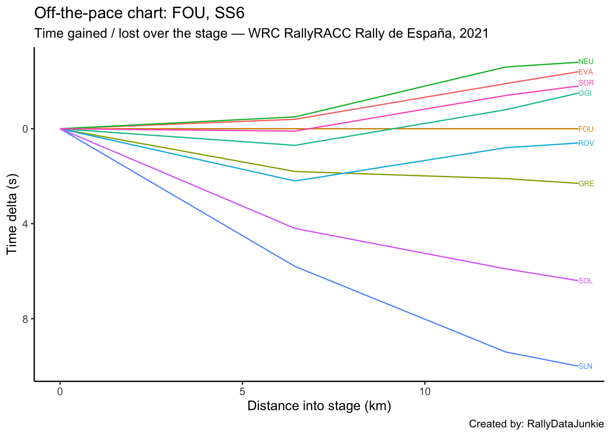
6.11.3 Within-Split Duration Deltas
FOU’s delta in time to complete each split section compared to other drivers:
| code | split_1 | split_2 | split_N |
|---|---|---|---|
| NEU | -0.5 | -2.1 | -0.2 |
| EVA | -0.4 | -1.5 | -0.5 |
| SOR | 0.1 | -1.5 | -0.4 |
| OGI | 0.7 | -1.5 | -0.7 |
| FOU | 0.0 | 0.0 | 0.0 |
| ROV | 2.2 | -1.4 | -0.2 |
| GRE | 1.8 | 0.3 | 0.2 |
| SOL | 4.2 | 1.7 | 0.5 |
| SLN | 5.8 | 3.6 | 0.6 |
6.11.4 Within-Split Pace Deltas
| code | split_1 | split_2 | split_N |
|---|---|---|---|
| NEU | -0.08 | -0.36 | -0.10 |
| EVA | -0.06 | -0.26 | -0.25 |
| SOR | 0.02 | -0.26 | -0.20 |
| OGI | 0.11 | -0.26 | -0.35 |
| FOU | 0.00 | 0.00 | 0.00 |
| ROV | 0.34 | -0.24 | -0.10 |
| GRE | 0.28 | 0.05 | 0.10 |
| SOL | 0.65 | 0.29 | 0.25 |
| SLN | 0.90 | 0.62 | 0.30 |
6.11.5 Within-Split Pace Map
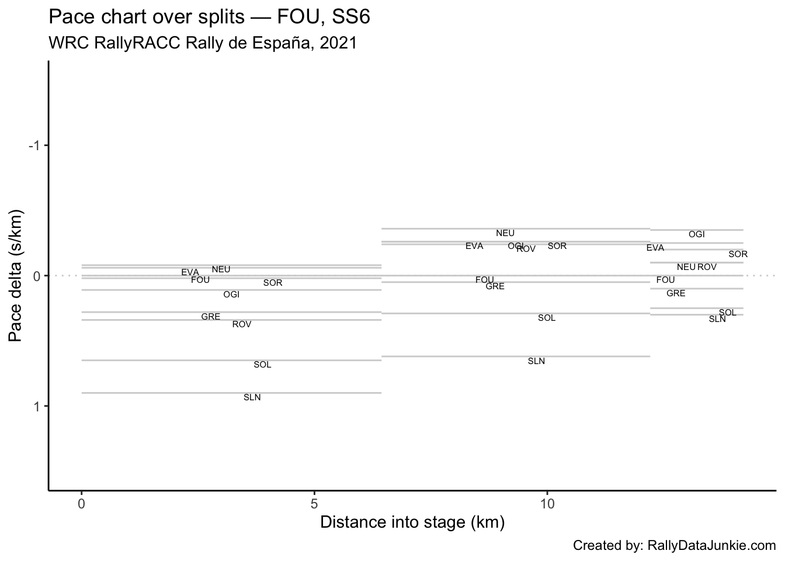
6.12 Driver Report, SS6 - SLN
SLN was in ninth position on stage, 12.8s behind the stage winner .
Stage report for SLN.
| Pos | Car | Code | Time (s) | Gap | Diff |
|---|---|---|---|---|---|
| 1 | 11 | NEU | -12.8 | -12.8 | 0.0 |
| 2 | 33 | EVA | -12.4 | -12.4 | 0.4 |
| 3 | 6 | SOR | -11.8 | -11.8 | 0.6 |
| 4 | 1 | OGI | -11.5 | -11.5 | 0.3 |
| 5 | 16 | FOU | -10.0 | -10.0 | 1.5 |
| 6 | 69 | ROV | -9.4 | -9.4 | 0.6 |
| 7 | 44 | GRE | -7.7 | -7.7 | 1.7 |
| 8 | 2 | SOL | -3.6 | -3.6 | 4.1 |
| 9 | 14 | SLN | 0.0 | 0.0 | 3.6 |
| 61 | 8 | TÄN | 587.2 | 587.2 | 356.1 |
| 62 | 18 | KAT | 587.2 | 587.2 | 0.0 |
| 63 | 54 | PER | 651.1 | 651.1 | 63.9 |
6.12.1 Rebased Split Times
SLN’s delta at each split compared to other drivers.
| code | split_1 | split_2 | split_N |
|---|---|---|---|
| NEU | -6.3 | -12.0 | -12.8 |
| EVA | -6.2 | -11.3 | -12.4 |
| SOR | -5.7 | -10.8 | -11.8 |
| OGI | -5.1 | -10.2 | -11.5 |
| FOU | -5.8 | -9.4 | -10.0 |
| ROV | -3.6 | -8.6 | -9.4 |
| GRE | -4.0 | -7.3 | -7.7 |
| SOL | -1.6 | -3.5 | -3.6 |
| SLN | 0.0 | 0.0 | 0.0 |
6.12.2 Off-the-Pace Chart
Accumulated stage time deltas at each split:
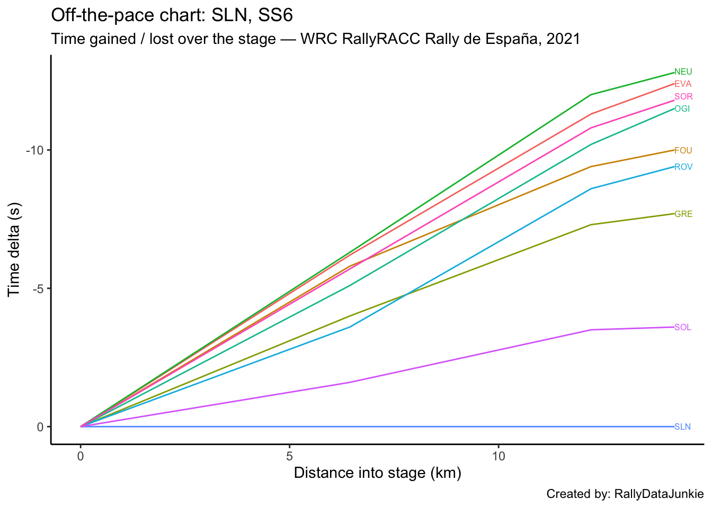
6.12.3 Within-Split Duration Deltas
SLN’s delta in time to complete each split section compared to other drivers:
| code | split_1 | split_2 | split_N |
|---|---|---|---|
| NEU | -6.3 | -5.7 | -0.8 |
| EVA | -6.2 | -5.1 | -1.1 |
| SOR | -5.7 | -5.1 | -1.0 |
| OGI | -5.1 | -5.1 | -1.3 |
| FOU | -5.8 | -3.6 | -0.6 |
| ROV | -3.6 | -5.0 | -0.8 |
| GRE | -4.0 | -3.3 | -0.4 |
| SOL | -1.6 | -1.9 | -0.1 |
| SLN | 0.0 | 0.0 | 0.0 |
6.12.4 Within-Split Pace Deltas
| code | split_1 | split_2 | split_N |
|---|---|---|---|
| NEU | -0.98 | -0.99 | -0.40 |
| EVA | -0.96 | -0.88 | -0.55 |
| SOR | -0.89 | -0.88 | -0.50 |
| OGI | -0.79 | -0.88 | -0.65 |
| FOU | -0.90 | -0.62 | -0.30 |
| ROV | -0.56 | -0.87 | -0.40 |
| GRE | -0.62 | -0.57 | -0.20 |
| SOL | -0.25 | -0.33 | -0.05 |
| SLN | 0.00 | 0.00 | 0.00 |
6.12.5 Within-Split Pace Map
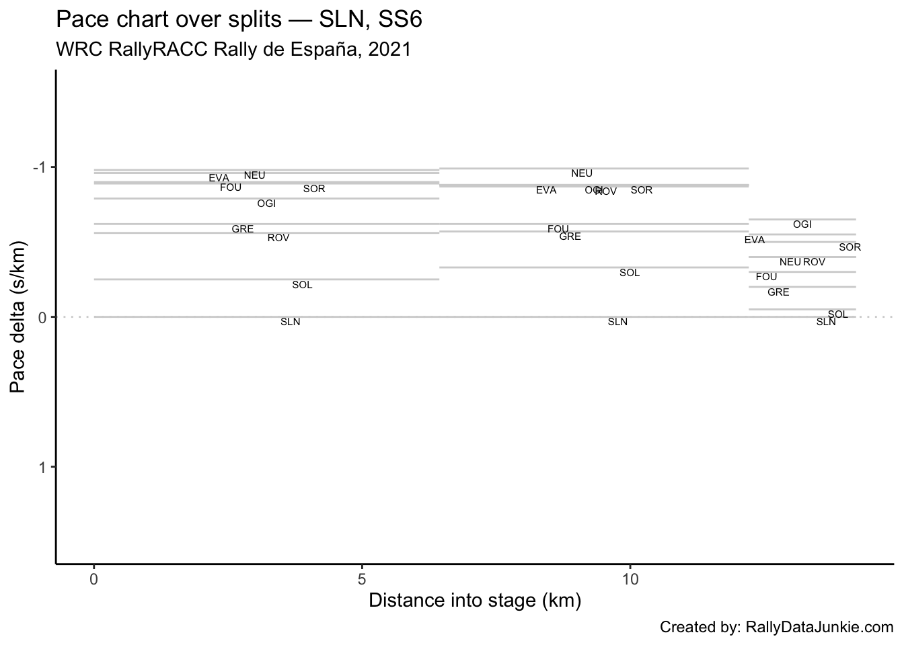
6.13 Driver Report, SS6 - SOL
SOL was in eighth position on stage, with a time of 527.4s .
Stage report for SOL.
| Pos | Car | Code | Time (s) | Gap | Diff |
|---|---|---|---|---|---|
| 1 | 11 | NEU | -9.2 | -9.2 | 0.0 |
| 2 | 33 | EVA | -8.8 | -8.8 | 0.4 |
| 3 | 6 | SOR | -8.2 | -8.2 | 0.6 |
| 4 | 1 | OGI | -7.9 | -7.9 | 0.3 |
| 5 | 16 | FOU | -6.4 | -6.4 | 1.5 |
| 6 | 69 | ROV | -5.8 | -5.8 | 0.6 |
| 7 | 44 | GRE | -4.1 | -4.1 | 1.7 |
| 8 | 2 | SOL | 0.0 | 0.0 | 4.1 |
| 9 | 14 | SLN | 3.6 | 3.6 | 3.6 |
| 61 | 8 | TÄN | 590.8 | 590.8 | 356.1 |
| 62 | 18 | KAT | 590.8 | 590.8 | 0.0 |
| 63 | 54 | PER | 654.7 | 654.7 | 63.9 |
6.13.1 Rebased Split Times
SOL’s delta at each split compared to other drivers.
| code | split_1 | split_2 | split_N |
|---|---|---|---|
| NEU | -4.7 | -8.5 | -9.2 |
| EVA | -4.6 | -7.8 | -8.8 |
| SOR | -4.1 | -7.3 | -8.2 |
| OGI | -3.5 | -6.7 | -7.9 |
| FOU | -4.2 | -5.9 | -6.4 |
| ROV | -2.0 | -5.1 | -5.8 |
| GRE | -2.4 | -3.8 | -4.1 |
| SOL | 0.0 | 0.0 | 0.0 |
| SLN | 1.6 | 3.5 | 3.6 |
6.13.2 Off-the-Pace Chart
Accumulated stage time deltas at each split:
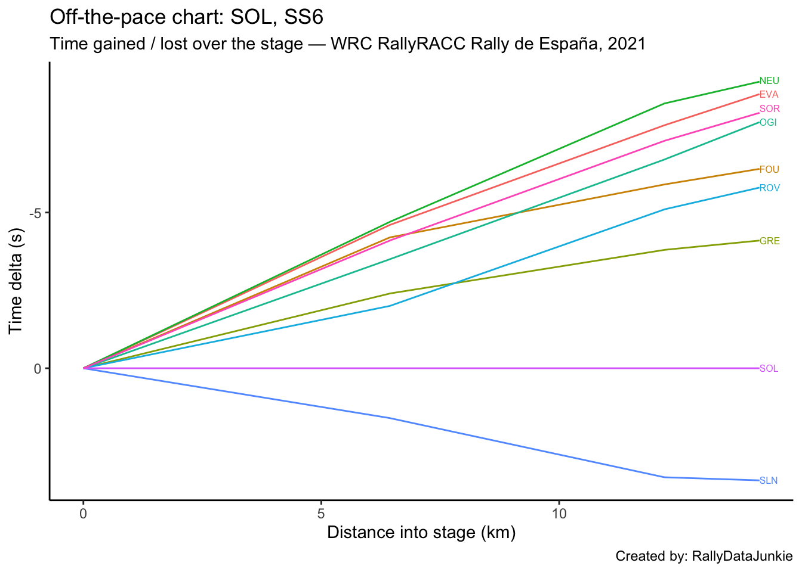
6.13.3 Within-Split Duration Deltas
SOL’s delta in time to complete each split section compared to other drivers:
| code | split_1 | split_2 | split_N |
|---|---|---|---|
| NEU | -4.7 | -3.8 | -0.7 |
| EVA | -4.6 | -3.2 | -1.0 |
| SOR | -4.1 | -3.2 | -0.9 |
| OGI | -3.5 | -3.2 | -1.2 |
| FOU | -4.2 | -1.7 | -0.5 |
| ROV | -2.0 | -3.1 | -0.7 |
| GRE | -2.4 | -1.4 | -0.3 |
| SOL | 0.0 | 0.0 | 0.0 |
| SLN | 1.6 | 1.9 | 0.1 |
6.13.4 Within-Split Pace Deltas
| code | split_1 | split_2 | split_N |
|---|---|---|---|
| NEU | -0.73 | -0.66 | -0.35 |
| EVA | -0.71 | -0.55 | -0.50 |
| SOR | -0.64 | -0.55 | -0.45 |
| OGI | -0.54 | -0.55 | -0.60 |
| FOU | -0.65 | -0.29 | -0.25 |
| ROV | -0.31 | -0.54 | -0.35 |
| GRE | -0.37 | -0.24 | -0.15 |
| SOL | 0.00 | 0.00 | 0.00 |
| SLN | 0.25 | 0.33 | 0.05 |
6.13.5 Within-Split Pace Map
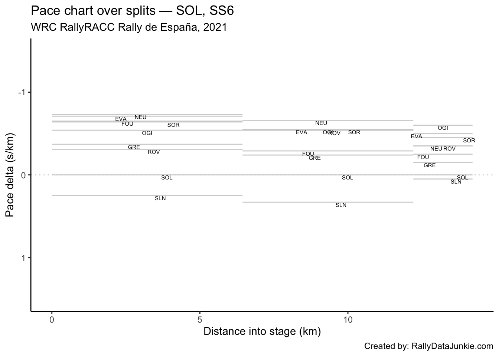
6.14 Driver Report, SS6 - PER
Stage report for PER.
| Pos | Car | Code | Time (s) | Gap | Diff |
|---|---|---|---|---|---|
| 1 | 11 | NEU | -663.9 | -663.9 | 0.0 |
| 2 | 33 | EVA | -663.5 | -663.5 | 0.4 |
| 3 | 6 | SOR | -662.9 | -662.9 | 0.6 |
| 4 | 1 | OGI | -662.6 | -662.6 | 0.3 |
| 5 | 16 | FOU | -661.1 | -661.1 | 1.5 |
| 6 | 69 | ROV | -660.5 | -660.5 | 0.6 |
| 7 | 44 | GRE | -658.8 | -658.8 | 1.7 |
| 8 | 2 | SOL | -654.7 | -654.7 | 4.1 |
| 9 | 14 | SLN | -651.1 | -651.1 | 3.6 |
| 61 | 8 | TÄN | -63.9 | -63.9 | 356.1 |
| 62 | 18 | KAT | -63.9 | -63.9 | 0.0 |
| 63 | 54 | PER | 0.0 | 0.0 | 63.9 |
6.14.1 Rebased Split Times
PER’s delta at each split compared to other drivers.
| code | split_1 | split_2 | split_N |
|---|---|---|---|
6.14.2 Off-the-Pace Chart
Accumulated stage time deltas at each split:
6.14.3 Within-Split Duration Deltas
PER’s delta in time to complete each split section compared to other drivers:
| code | split_1 | split_2 | split_N |
|---|---|---|---|
6.14.4 Within-Split Pace Deltas
| code | split_1 | split_2 | split_N |
|---|---|---|---|
6.14.5 Within-Split Pace Map